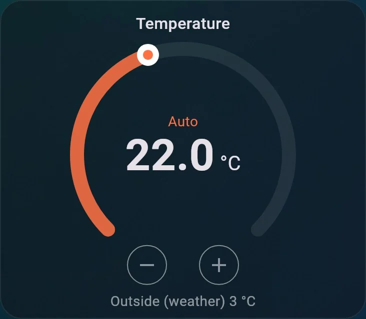
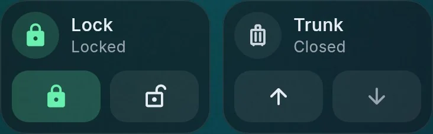
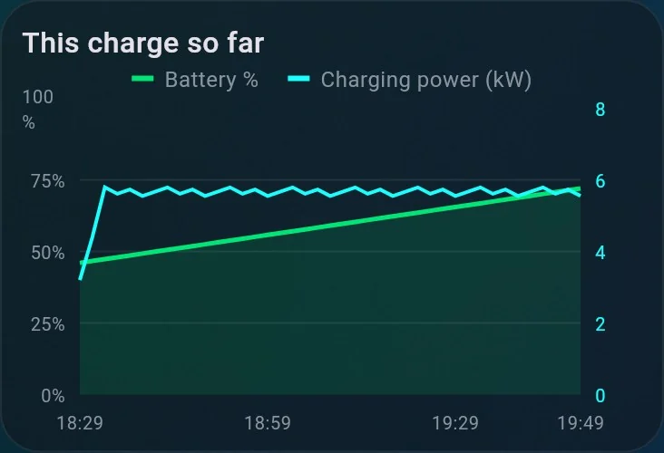
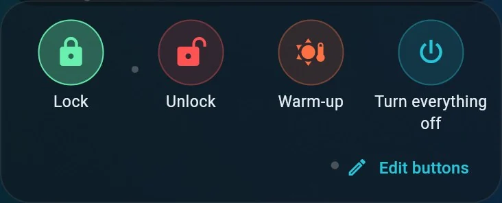
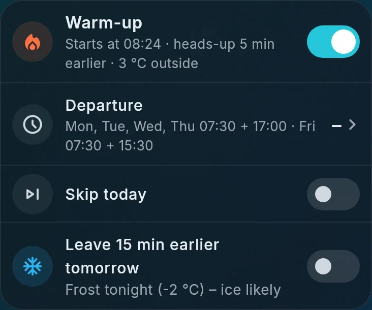

Para propietarios de Omoda, Jaecoo y Chery
Tu coche, de un vistazo.
Batería, autonomía, cierre y climatización de un vistazo. Climatiza el habitáculo antes de salir, sigue cada viaje y cada carga, y recibe un aviso solo cuando importa.
App Store y Google Play: muy pronto
- Gratis
- iPhone y Android
- App en español: muy pronto
- Datos almacenados en la UE







Funciona con coches conectados Omoda y Jaecoo – Jaecoo 5 EV, Jaecoo 7 SHS, Omoda 5 EV, Omoda 9 SHS y más – y con los Chery Tiggo 7, Tiggo 8 y Tiggo 9.
Funciones
Todo lo que muestra la app oficial – y lo que no.
Estado de un vistazo
Batería, combustible y autonomía, cierre, puertas, ventanillas, neumáticos y dónde está aparcado – con tu propio coche en su color real.
Más información
Carga en detalle
Potencia de carga en kW en tiempo real, tiempo restante, un registro de cada carga y la energía que llega a la batería.
Preclimatización inteligente
Indica tu hora de salida para cada día de la semana. Carmeo consulta la previsión y calienta o enfría el habitáculo justo a tiempo.

Control remoto
Bloqueo y desbloqueo, climatización, calefacción de asientos y volante, desempañado – con confirmación antes de las órdenes delicadas.
Neumáticos, mantenimiento, documentos
Presión de los neumáticos con aviso, próxima revisión por fecha o por kilómetros, recordatorios de ITV, seguro y viñeta.
Más información
Avisos que importan
- Helada esta noche
- Se quedó abierto
- Carga terminada
- Alguien ha salido con él
Viajes y rutas
Cada viaje en el mapa, con su distancia, el porcentaje eléctrico y lo que te ha costado.
Más informaciónCostes y consumo
Energía y combustible por viaje, el coste de cada viaje y cada carga con tus propios precios en casa y fuera, y totales mensuales.
Más informaciónSeguridad integrada
Inicio de sesión en dos pasos, dispositivos conectados que puedes desconectar a distancia, Face ID o huella antes de desbloquear.
Más informaciónNuevo en 1.7.0
 Tu coche en su propio color, batería y autonomía – y una fila de botones para bloquear, calentar, enfriar o actualizar.
Tu coche en su propio color, batería y autonomía – y una fila de botones para bloquear, calentar, enfriar o actualizar.

Más allá de la app
Tu coche en la pantalla de bloqueo, no escondido en una app.
iPhone
- Widgets en la pantalla de inicio y de bloqueo
- Live Activities en la Dynamic Island
- Botones en el Centro de control
Android
- Widgets en la pantalla de inicio
- Iconos de Ajustes rápidos
- Notificaciones de carga en tiempo real
La carga, la cuenta atrás de la preclimatización y el estado del cierre te siguen allí donde mires – un toque para bloquear, calentar o enfriar.
Cómo funciona
Listo en tres minutos.
Instala Carmeo
Crea una cuenta de Carmeo gratuita con tu e-mail, Apple o Google.

Conecta tu coche
Inicia sesión con tu cuenta de OMODA | JAECOO o de Chery. Consejo: comparte el coche con una segunda cuenta, así la app oficial también sigue con la sesión iniciada.

Y ya está
Carmeo vigila tu coche las 24 horas – cada 2 minutos mientras conduces o cargas, cada 10 cuando está aparcado.

Privacidad y seguridad
Tu coche, tus datos.
Carmeo necesita la cuenta de tu coche para comunicarse con él. Esto es exactamente lo que pasa con ella – y con todo lo demás que guarda la app.
Política de privacidad (en inglés)La contraseña del coche nunca se guarda
Se usa una sola vez para iniciar sesión en la nube del coche y después se borra.
Claves y PIN cifrados
Las claves de acceso de tu coche y el PIN del vehículo se guardan con cifrado AES-256.
Almacenados en la UE
Tus datos están en servidores de Irlanda y Alemania.
Sin anuncios ni analítica
Sin perfiles y sin venta de datos. Tus datos solo sirven para que la app funcione.
Historial de ubicaciones en pausa
Desactiva el registro de ubicación cuando quieras – los viajes se guardan entonces sin lugares.
Exporta o borra cuando quieras
Descarga todo lo que guarda Carmeo, o borra tu cuenta y todos los registros, desde la propia app.
Preguntas
¿Tienes preguntas?
Escríbenos a support@getcarmeo.app en inglés o en español – te responde una persona.
¿Con qué coches funciona Carmeo?
Con los coches que funcionan en Europa con la app oficial de OMODA | JAECOO o con la app oficial de Chery: por ejemplo el Jaecoo 5 EV, el Jaecoo 7 SHS, el Omoda 5 EV, el Omoda 9 SHS y los Chery Tiggo 7, 8 y 9, que nuestros usuarios usan a diario. Si tu coche no puede conectarse a la app oficial, Carmeo tampoco puede. Las funciones disponibles dependen de lo que acepte cada coche.
¿Por qué necesita Carmeo la cuenta de mi coche?
Tu coche solo se comunica con el servicio online del fabricante. Carmeo usa ese mismo servicio, a través de tu propia cuenta – no hay otra forma de llegar al coche. La contraseña se usa una sola vez para iniciar sesión y nunca se guarda; las claves de acceso se guardan cifradas.
¿Seguirá funcionando la app oficial?
Las nubes de los fabricantes permiten una sola app con la sesión iniciada por cuenta. Comparte tu coche con una segunda cuenta en la app oficial y conecta esa a Carmeo – así funcionan las dos.
¿Puede tener problemas la cuenta de mi coche?
Carmeo es una app no oficial, y las condiciones de los fabricantes limitan el acceso desde otras apps – así que podrían restringir una cuenta que use Carmeo. Por eso recomendamos conectar una segunda cuenta con la que compartas el coche, no tu cuenta principal. Los detalles están en las Condiciones de uso (en inglés).
¿Qué pasa si el fabricante cambia su servicio?
Entonces una función puede dejar de funcionar hasta que Carmeo se actualice. Carmeo depende de los mismos servicios online que la app oficial, y los fabricantes pueden cambiarlos en cualquier momento.
¿Cómo de actualizados están los datos?
Cada 2 minutos aproximadamente mientras conduces o cargas, y cada 10 minutos con el coche aparcado. Después de una orden, Carmeo actualiza al momento.
¿Mantiene Carmeo el coche despierto o le gasta la batería?
No. Carmeo lee lo que el coche ya ha enviado al servicio online del fabricante, y consultarlo no despierta el coche. Las órdenes sí lo despiertan, igual que en la app oficial – y Carmeo puede avisarte si la batería se descarga con el coche aparcado.
¿En qué idiomas y unidades está disponible?
La app está en inglés, húngaro y rumano; el español llegará muy pronto. Costes en euros, forintos, leus o libras, distancias en kilómetros o millas, y una vista para volante a la derecha.
¿Puede usarla también mi familia?
Sí. Invita hasta a cinco personas, cada una con su propia cuenta de Carmeo, y decide qué puede hacer cada una: solo ver, ver y usar la climatización, o todo. Tu ubicación solo se comparte si la activas.
¿Cuesta algo?
No. Carmeo es gratis.
¿Cómo borro mis datos?
En la app: Ajustes → Cuenta → Eliminar cuenta – todo lo vinculado a la cuenta se borra al momento. Antes puedes exportar tus datos. Sin la app: consulta Eliminar la cuenta (en inglés).
¿Quién hace Carmeo?
Un desarrollador independiente de Budapest, como proyecto personal, que conduce él mismo un Tiggo 9. Carmeo no tiene relación con los fabricantes de coches y no lleva anuncios.
Prueba las novedades antes que nadie.
Carmeo está en prueba abierta en iPhone y Android. Es gratis, y tus comentarios deciden lo que viene después.
iPhone – TestFlight
- Instala la app gratuita TestFlight de Apple desde el App Store.
- Abre el enlace de invitación en tu iPhone e instala Carmeo.
Android – Google Play
- Primero, únete al grupo de testers con tu cuenta de Google.
- Después, abre la página de prueba en Google Play e instala Carmeo.